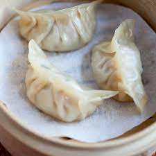
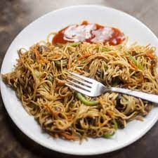
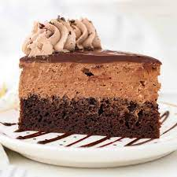

| Brearfast | Lunch | Dinner | Dessert |
|---|---|---|---|
| Black-Tea | Dumplings  | Chowmein  | Mousse cake  |
| 1.Bring water to a boil in a kettle or saucepan. 2.Place the black tea bag or tea leaves into a cup. 3.Once the water has boiled, pour it over the tea bag or leaves in the cup. 4.Let the tea steep for 3-5 minutes, depending on your desired strength. 5.Remove the tea bag or strain the tea leaves if using loose leaves. 6.Optionally, add sweeteners like sugar or honey, and milk or lemon according to your preference. 7.Stir and enjoy your hot cup of black tea! |
1.Mix ground meat, chopped vegetables, soy sauce, and sesame oil in a bowl. 2.Place a spoonful of filling onto each dumpling wrapper. 3.Moisten the edges of the wrapper with water, fold, and seal. 4.Boil or steam dumplings until wrappers are cooked and filling is heated through. 5.Serve with soy sauce or dipping sauce of your choice. Enjoy! |
1.Cook chow mein noodles according to package instructions. Drain and set aside. 2.Heat sesame oil in a pan and sauté minced garlic and ginger until fragrant. 3.Add chopped vegetables and protein, stir-fry until cooked through. 4.Toss in cooked noodles and soy sauce, stir-fry until noodles are heated through. 5.Serve hot and enjoy your delicious chow mein! |
1.Preheat oven to 350°F (175°C). Grease and flour a 9x13 inch baking pan. 2.Mix flour, sugar, cocoa powder, baking powder, and baking soda in a large bowl. 3.Add eggs, milk, oil, and vanilla. Beat on medium speed for 2 minutes. 4.Stir in boiling water until well combined (batter will be thin). 5.Pour batter into the prepared pan and bake for 30-35 minutes until a toothpick inserted into the center comes out clean. |